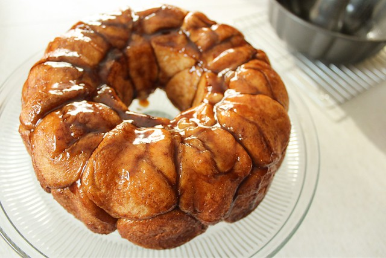

Home
Monkey Bread

Description
Monkey bread is a pull-apart pastry made from bite-sized pieces of soft dough, coated in cinnamon sugar, and baked until golden and caramelized. As it bakes, the butter, sugar, and cinnamon melt together into a sticky, gooey glaze that coats every piece. Traditionally served warm, it's perfect for sharing—each little morsel can be pulled away by hand, revealing a tender, fluffy inside and a sweet, slightly crisp outside. Often enjoyed for breakfast, brunch, or as a cozy dessert, monkey bread is as fun to eat as it is delicious.
Ingredients
- 1 cup white sugar
- 2 teaspoons ground cinnamon
- 3 (12 ounce) packages refrigerated biscuit dough
- ½ cup chopped walnuts
- ½ cup raisins
- ½ cup butter or margarine
- 1 cup packed brown sugar
Steps
- Gather all ingredients. Preheat the oven to 350 degrees F (175 degrees C). Grease a 9- or 10-inch tube or Bundt pan.
- Mix white sugar and cinnamon in a plastic bag. Cut biscuits into quarters. Shake 6 to 8 biscuit pieces in the sugar-cinnamon mix.
- Arrange pieces in the bottom of the prepared pan. Continue until all biscuits are coated and placed in the pan. If using walnuts and raisins, arrange in and among the biscuit pieces as you go along.
- Melt butter and brown sugar in a small saucepan over medium heat. Boil for 1 minute; pour over biscuits.
- Bake bread in the preheated oven for 35 minutes; let cool in the pan for 10 minutes, then turn out onto a plate and let everyone pull it apart.